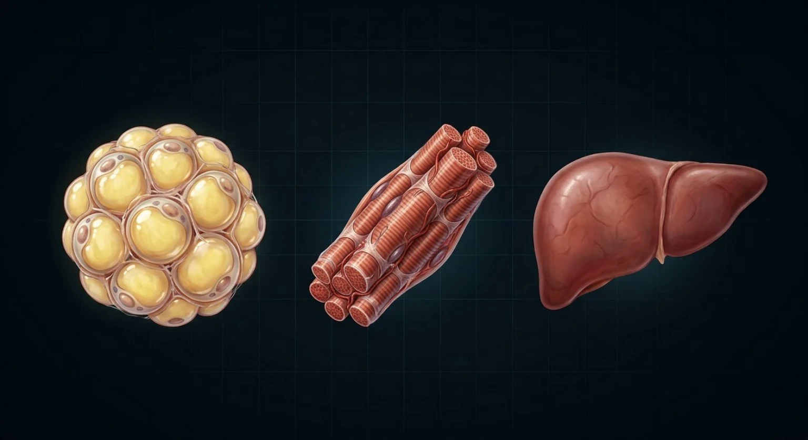
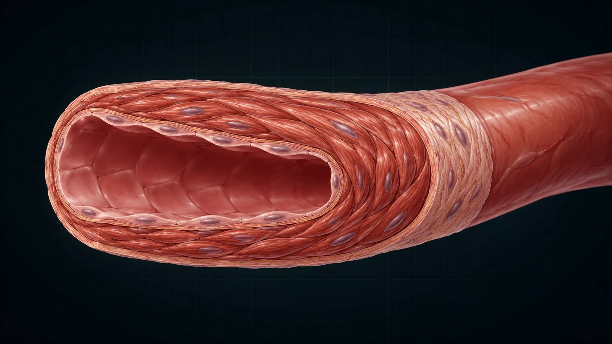
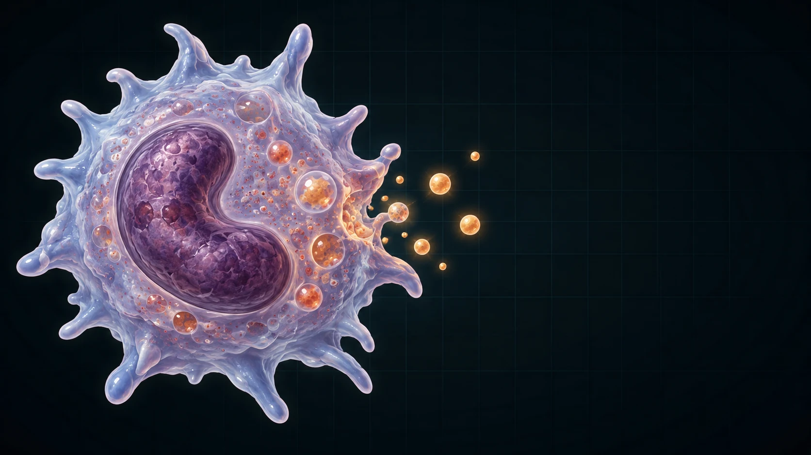

Too little cortisol
Fuel support ↓ → hypoglycaemia, especially in children and during illness
Vascular responsiveness ↓ → hypotension, shock in severe deficiency
Stress adaptation fails → illness becomes dangerous
Where cortisol comes from, how the body controls it, and why its normal physiology predicts what happens when there is too little or too much.
Designed for about 15–18 minutes. Narration reveals each diagram at the point it becomes relevant.



The adrenal glands sit on the upper poles of the kidneys. Each contains several endocrine tissues packed together.
The cortex makes steroid hormones. The medulla is a different tissue and makes catecholamines. Within the cortex, cortisol is produced mainly in the broad middle layer: the zona fasciculata.

Every adrenal steroid starts from cholesterol. For this Fundamentals lesson, the useful idea is the common starting material, not memorising the whole enzyme pathway.
Because cortisol is lipid soluble, it can cross cell membranes and alter gene transcription through intracellular receptors. It is synthesised when needed rather than stored in large secretory vesicles like a peptide hormone.
Cortisol enters the cell, binds the glucocorticoid receptor, and the complex moves to the nucleus.
There it changes transcription of many genes. That is why cortisol has broad effects across metabolism, vessels, immunity, bone, brain and growth.
The hypothalamus releases CRH. The anterior pituitary responds with ACTH. ACTH stimulates the zona fasciculata to make cortisol.
Cortisol then feeds back to both hypothalamus and pituitary. This negative feedback prevents uncontrolled stimulation.
If cortisol falls because the adrenal gland fails, what should happen to ACTH?
Cortisol has a strong circadian rhythm: levels rise before waking, are highest in the early morning, then fall through the day and are lowest around midnight.
Physiological stress can override that baseline. Infection, trauma, surgery, fasting and hypoglycaemia all increase HPA-axis drive.
So cortisol is better thought of as a hormone that helps preserve function when circumstances change—not simply as a “stress hormone”.
During fasting or illness, the body cannot rely on a meal arriving on time. Cortisol supports hepatic gluconeogenesis and helps mobilise amino acids and fatty acids that can be used as fuel or substrate.
The purpose is not “to make glucose high”. The purpose is to stop essential tissues running out of usable fuel when demand rises or intake falls.
What becomes more likely if cortisol is severely deficient during illness?
Cortisol promotes protein catabolism in peripheral tissues, making amino acids available. It also increases mobilisation of fatty acids.
Acute stress uses this as a survival strategy. Chronic excess turns the same physiology into muscle wasting, thin skin, poor growth and altered fat distribution.
Protein breakdown → amino acids available for hepatic glucose production and repair priorities.
Lipolysis and fatty-acid mobilisation increase fuel availability.
Adaptive: redistribute resources toward immediate physiological demand.
Catabolism becomes harmful: weakness, growth suppression and tissue fragility.
Noradrenaline and adrenaline constrict vessels, but normal cortisol is required for an appropriate vascular response.
This is why severe cortisol deficiency can produce hypotension that is disproportionately difficult to correct: the catecholamine system is present, but the vascular response is blunted.
Inflammation is essential, but an unrestricted inflammatory response damages tissue. Cortisol suppresses multiple inflammatory genes and immune signals.
That is useful during normal physiology and stress. But chronic excess becomes immunosuppressive, increasing infection risk and impairing wound healing.
Normal cortisol participates in everyday regulation across bone, connective tissue, brain and growth. The problem comes when exposure is chronically excessive.
Too much cortisol reduces bone formation, antagonises growth pathways, contributes to muscle wasting and skin thinning, and can alter mood, sleep and cognition.
This is particularly important in paediatrics: growth failure may be an early clue to chronic cortisol excess.
Chronic excess → reduced bone formation and lower bone strength.
Chronic excess → growth suppression, especially important in children.
Catabolism → thinning, bruising and weakness.
Sleep, mood, attention and cognition can all be affected by abnormal exposure.
If you understand what cortisol normally does, the clinical patterns stop looking like unrelated lists.
Which pattern best follows from cortisol deficiency?
Fuel support ↓ → hypoglycaemia, especially in children and during illness
Vascular responsiveness ↓ → hypotension, shock in severe deficiency
Stress adaptation fails → illness becomes dangerous
Glucose production ↑ → hyperglycaemia
Catabolism ↑ → muscle wasting, skin thinning, growth failure
Immune restraint ↑ → infection risk, impaired healing
Bone formation ↓ → reduced bone strength
Adrenal cortex. Zona fasciculata. Cholesterol-derived steroid. HPA-axis control. Circadian rhythm plus stress responsiveness.
Then remember the purpose: preserve fuel, maintain vascular responsiveness, restrain inflammation and coordinate longer-term tissue responses.
Once that is clear, cortisol deficiency and cortisol excess are no longer two lists to memorise. They are simply the normal physiology pushed in opposite directions.